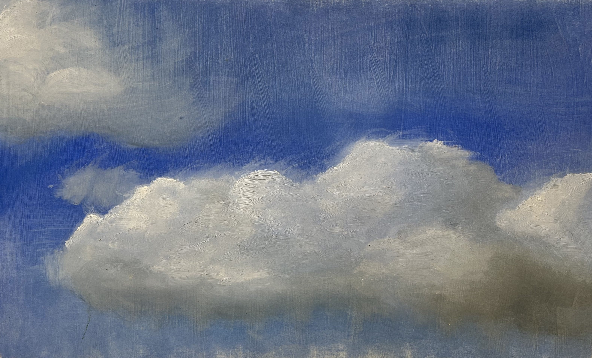
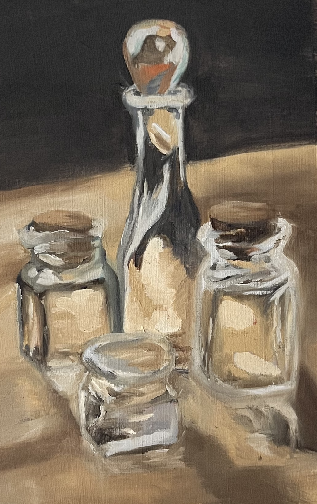
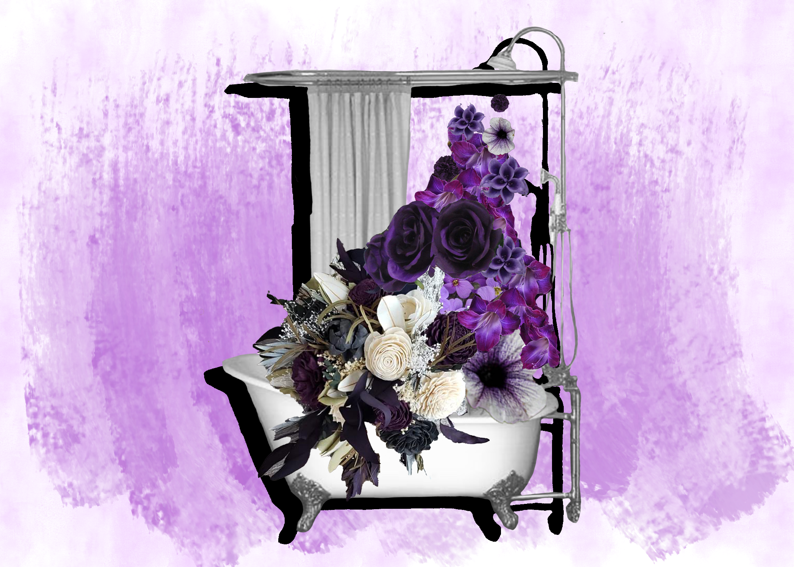
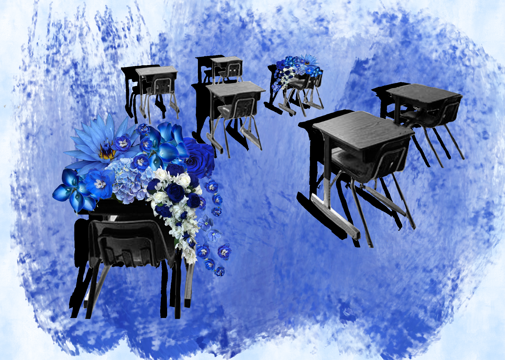
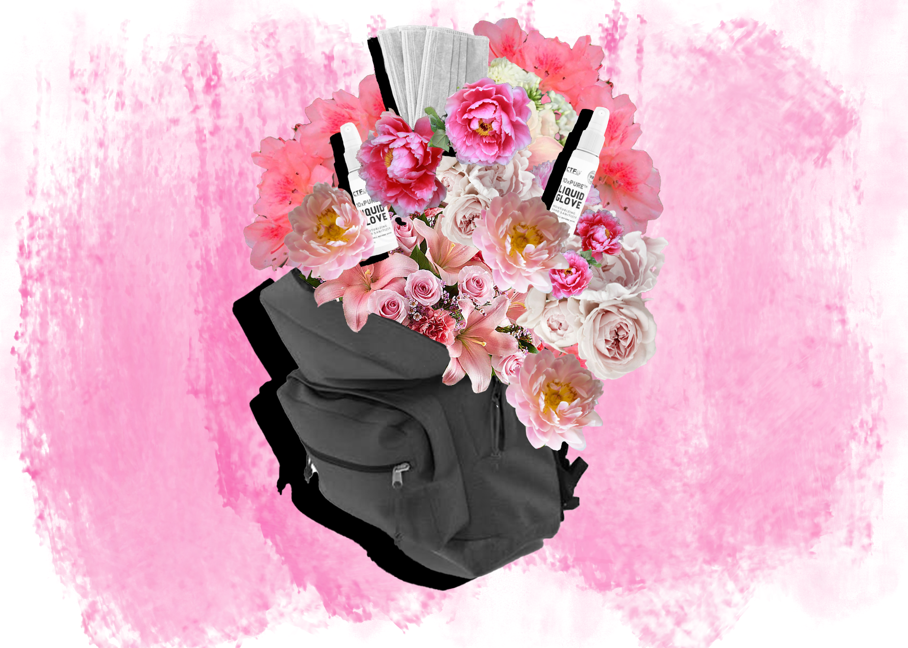
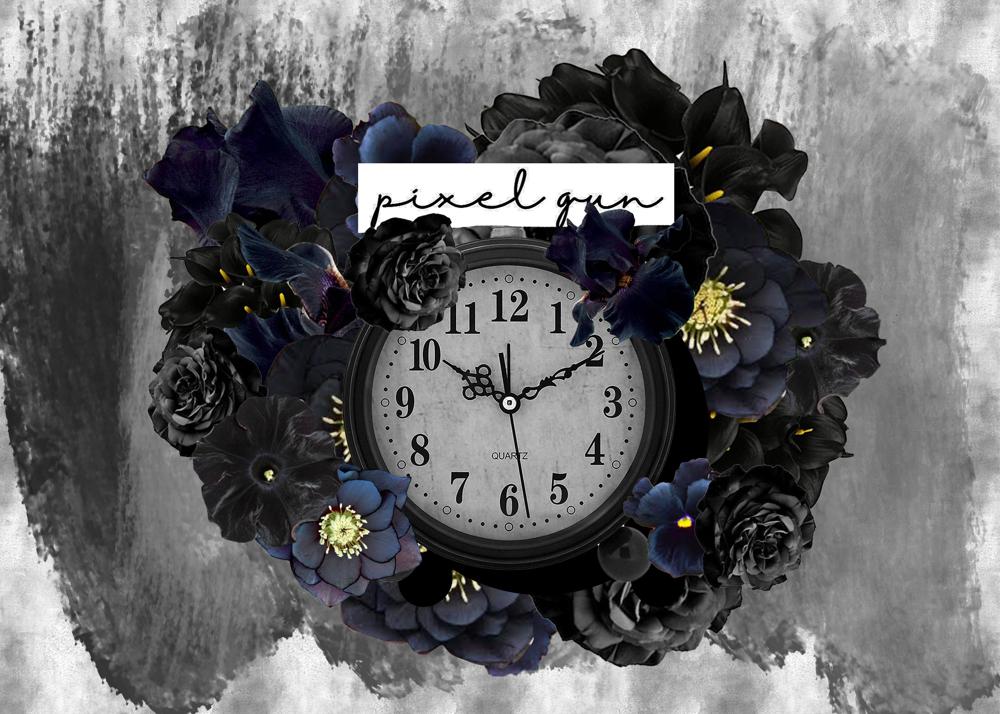

Projects + Design + Art
SPAN
The SPAN Challenge: MIT Clean Energy Hack 2022
Languages used: D3, Javascript, HTML/CSS
Winner of the SPAN challenge!
To present our solution for SPAN's challenge on load distribution throughout the duration of a day in a household, I made an interactive visualization where users could zoom in on time frames to see the exact distribution of energy at any specific time.
SPAN
Modal title
Paintings
Recent Oil Paintings
Skills used: oil painting
I took my first two oil painting classes this year, here are some of the works that I'm most proud of! I'm excited to continue my painting journey and see my progression in the future!
Bifacial Glow, oil on canvas 4x6 ft
Clouds, oil on paper 24x18 in
Monochrome Study of a Biface, oil on canvas 3x3 ft
Masochism, oil on canvas 3x3 ft

Aterian Point, oil on canvas 3x3 ft
DaLL-E 2 AI Generated Glass Scene, oil on paper 5x12 in
Digital Design
The COVID-19 Pandemic through the eyes of the youth
Skills used: Adobe Illustrator and Photoshop, Interviewing
This project was a photo essay that I made in 2020 that depicted how young kids were viewing the global changes and challenges as we all experienced the worst parts of the pandemic. I conducted interviews with two siblings, who were 9 and 10 at the time, to understand a little bit more about how they were processing the worldly situations and what specific emotions and thoughts they were feeling.
Show Up and Shower
Mista-Clean
Alone Together
Extra Supplies
Mask-erade Party

Wanted: Mask On

Zoom Soon

PixelGun
The elements in each of these collages all stem from their interviews, whether it be the physical items they were interacting with, or the colors that they thought best described the pandemic. Big shoutout to Antony and Vivian for being such great interviewees and friends, keeping me constantly on my toes.